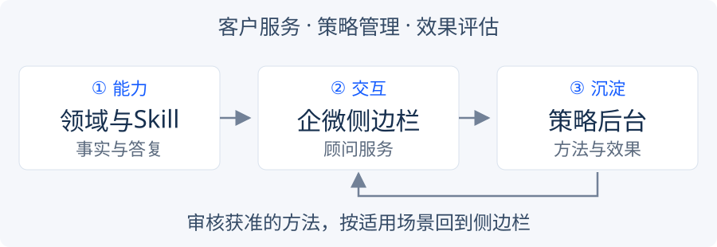
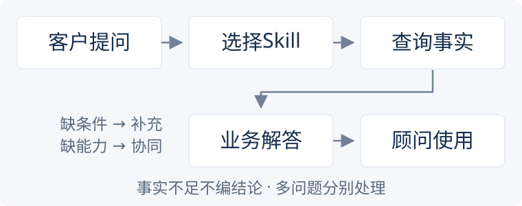

财富服务智能体｜总体方案
先查对事实、答清客户问题，再沉淀可复制的服务方法。 企业微信侧边栏服务顾问，财富管理后台管理策略和效果；协同基线统一为 heikesong。
🧭 一张图看整体

整体业务仍是 客户服务＋策略管理＋效果评估。以下三项是协作任务包，不是重新划分系统，也不安排成员、人数或负责人。
三个模块与任务边界
| 任务模块 | 负责什么 | 交付与入口 | 不负责什么 |
|---|---|---|---|
| ① 领域与Skill | 客户场景、基金业务规则、按需查询、数据解释、答复评估 | 领域与Skill；domains/、integrations/ | 不直接发送、办理、关闭；不自行造接口字段 |
| ② 企微侧边栏 | 当前客户、多问题、事实、话术、过程、补充及协同交互 | 侧边栏方案；prototype/service/ | 不改接口事实，不在前端自定业务规则 |
| ③ 策略管理与沉淀 | 场景时机、方法、来源贡献、后台审核、效果及侧边栏复用 | 策略方案；后台#strategies／#review | 不把候选、审核通过或Mock当策略已有效 |
原Demo内部能力编号沿用：M01 会话服务应用 → 模块②；M02 智能体执行与领域Skill、M03 事实数据与公司接口 → 模块①；M04 策略沉淀与审核、M05 效果评估与模型迭代 → 模块③。它们是子能力，不是新增生产DTO或表字段。
🔎 客户服务主链

客户问什么 → 匹配Skill → 需要哪些事实 → 实际取得什么 → 能得出什么 → 哪些仍未知 → 答复。
问题按独立诉求管理，不按Skill数量拆；多个问题可共用Skill，事实和草稿仍隔离。客户补充续接原问题，独立新诉求才另识别。普通咨询不是生产故障；查到相关数据或部分答复不等于完整解决。
| 执行结果 | 处理原则 |
|---|---|
| 事实、规则充分 | 直接答当前全部所问，不硬加补问或无关推荐 |
| 客户条件确实不足 | 只问能推进查询的必要条件，补充后续接 |
| 尚未查到／对象不符 | 继续必要查询，不用错客户、错产品或错交易结果 |
| 现有能力不能闭环 | 保留已知事实和具体缺口，必要协同由顾问确认 |
| 接口或模型技术异常 | 留痕、简短提示；不编结论、不登记成客户生产问题 |
🧩 先沉淀规则，再分工实现
| 共用规则 | 明确边界 |
|---|---|
| 事实优先 | 区分接口返回、已审核规则、系统核算、模型建议；金额、份额、日期、状态不可混用 |
| 模型按需执行 | 用现有领域工具范围；有依赖则多轮，保留5轮及无进展退出，授权由宿主控制 |
| 前端呈现 | 默认关键事实＋建议话术，中文表达；实际执行活动与依据折叠，不展示私有思维链 |
| 外部流程 | 创建、协同、发送、关闭遵循现行状态机；发送看回执，关闭由顾问确认 |
| 策略受控复用 | 候选不自动生效，批准绑定来源及适用范围，拒绝／不适配停止相应推荐 |
| 简单验收 | 查对事实、用对数据、回答所问同时满足；充分条件完整答复率≥90%，严重事实错误为0 |
各模块交接只需讲清 当前目标、事实与范围、可得结论、具体缺口、实际活动／结果。这是逻辑内容，不新增字段；接口变更仍先审批。
AI Native职责仍为 会话理解→领域服务→答案核验，策略归纳异步进行；这是职责分层，不要求每题额外调用四个模型。模型按目标选择必要事实，系统守授权和数据边界，顾问确认对客内容，业务负责人批准策略试用；独立Codex三角色用于案例与规则审核，不替代这些职责。
持续建设顺序：先验证答复有效性，再接真实事实／协同／发送链，积累影子反馈，最后检验策略与预测模型的真实增量。购买及流失预测只提供待核线索，不能代替客户需要、适当性或授权。
🗂 只保留必要内容
| 看什么 | 唯一维护位置 |
|---|---|
| 整体框架、模块关系 | 本页 |
| 场景、Skill正文、专业规则 | 业务领域，不在docs再抄一遍 |
| MCP请求应答与模型 | 接口合同、模型网关 |
| 交互、演示步骤与按钮验收 | 侧边栏模块 |
| 策略分类、SOP、嵌入与后台审核 | 策略模块 |
| 当前工作与提交 | 协同上下文、提交规范 |
Demo边界： 接口、后续客户补充、人工结果及发送回执是Mock；企微聊天和公司项目只声明依赖，不复制全量工程。静态原型不会实时调用模型。专户业绩报酬、资产收益专业包单独维护，不把资料齐全写成统一侧边栏全部接通。
本次合并重复方案与历史审核说明，未改表、状态、Skill、MCP、金标的业务定义。旧文档和审核依据从压缩前提交追溯；历史成绩不自动继承为本轮业务通过率。